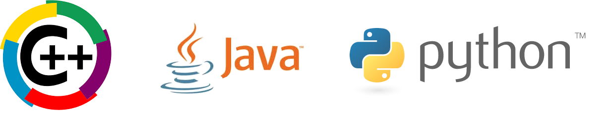

There are many languages in use today. The first major language developed was FOTRAN in the late 1950s. COBOL and ALGOL were developed short after FOTRAN and were intended for more public use.
The first high level language developed was C in the 1970s. C is still used today in operating system development as it provides easy low level access to computer hardware resources.
In the later half of the '70s and early '80s, Object Orientated Programming was beginning to take shape. C++ was built upon C and designed with OOP in mind.
Sun Microsystems developed Java in the early 1990s as a response to a need of a widespread and portable language. Around the same time, Python was being implemented by a single gentleman from the Netherlands.
Out of all the languages in existence, I chose these three (in the navigation bar and below) as my personal top three languages to know.
